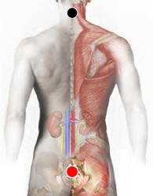

Disfunción Parasimpática
Par
cervicales - sacro*

* Puede ser centrado o contralateral
Generalidades:
Los síntomas pueden ser: mala circulación, hiperhidrosis, sudoraciones, palpitaciones, colón irritable, muy útil para tratar insomnio, rigidez de nuca y cuello. alteración del sueño, fatiga crónica, depresión, irritabilidad, desórdenes gástricos, depresión del sistema inmune, entre otros.
Los imanes se sitúan en alguna de las cervicales y alguna vértebra del sacro (rastrear).
Causas
Estrés, ingestión de tóxicos y estimulantes como la cafeína afectan a este sistema. Incluso el exceso de trabajo, ejercicio o la falta de sueño, creando un círculo vicioso.